Industrial
Bolsos de Fieltro
Bolsas de fieltro para la empresa Feltum, el objetivo era crear un producto bandera para esta nueva marca de productos de fieltros, así logrando ventas internacionales del producto y posicionamiento de la marca. www.feltum.com
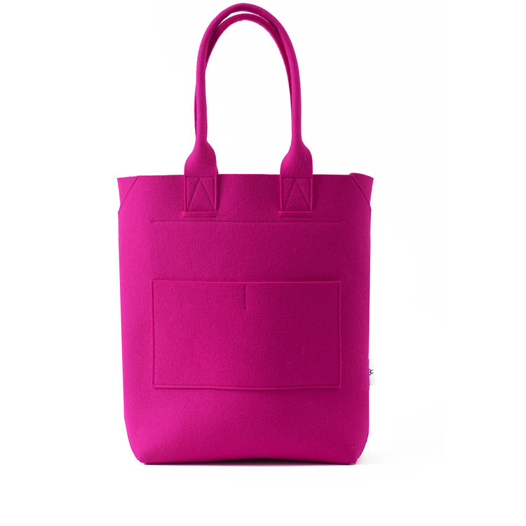
Totebag
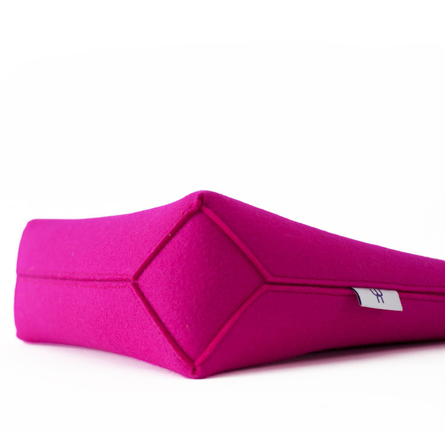
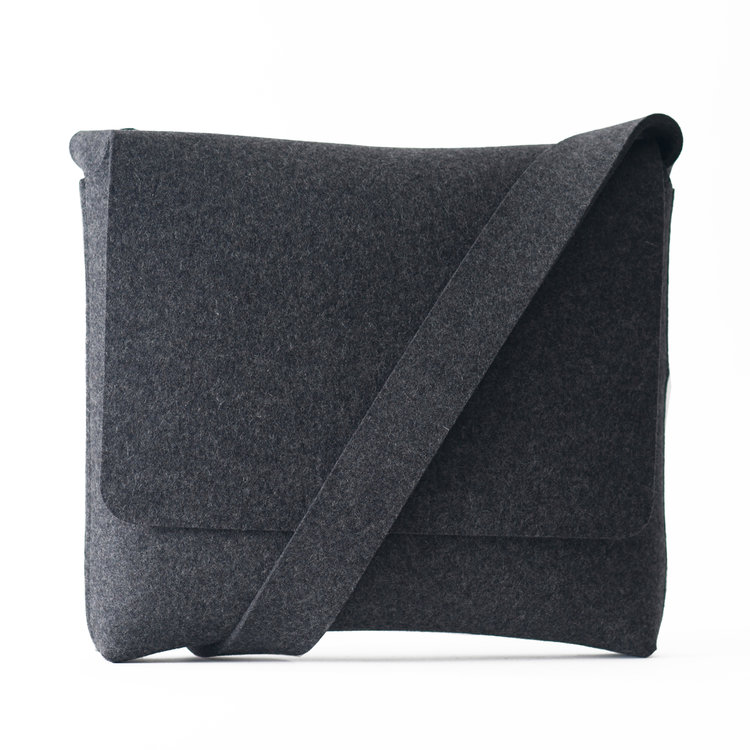
Mensajero
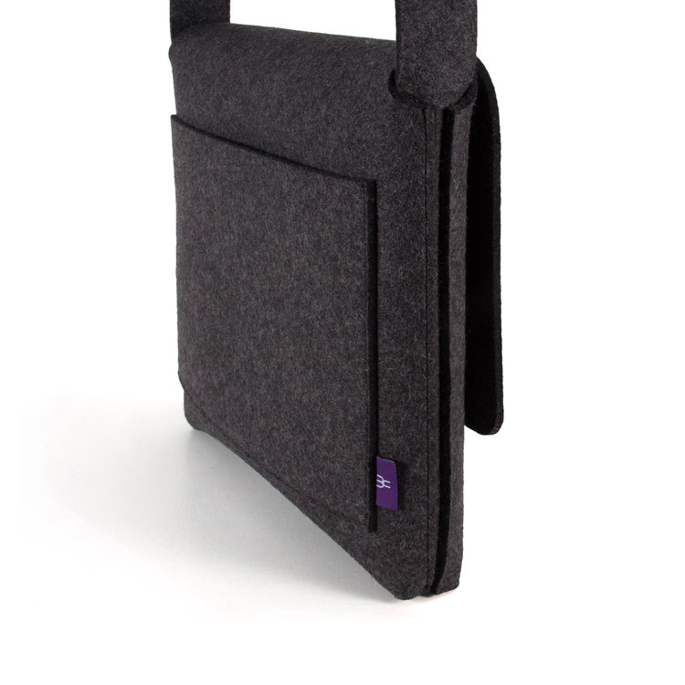
Expressoclycles
Expressoclycles una startup mexicana de bicicletas fixed me pidió diseñar una bicicleta para un usuario que le gustara el arte contemporáneo. Por lo que me inspire en el arte kinético. Al final el diseño se presentó en una exposición llamada “Love velo” en una galería de diseño en la Ciudad de México.
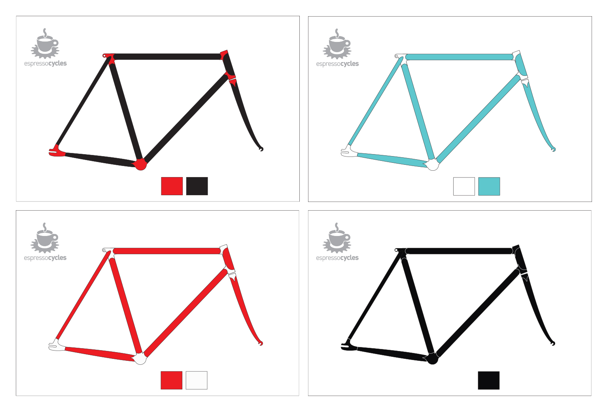
Pruebas de paletas de colores en los cuadros
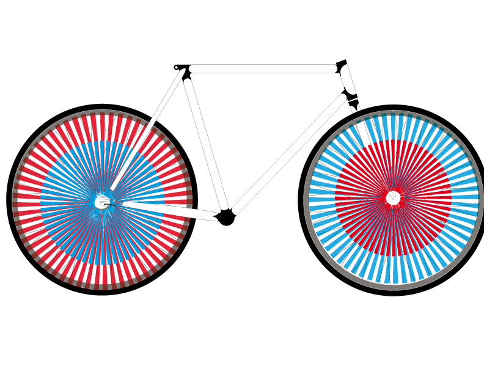
Boceto de la interación Knitetica dentro de las ruedas ya que son las que generan movimiento.
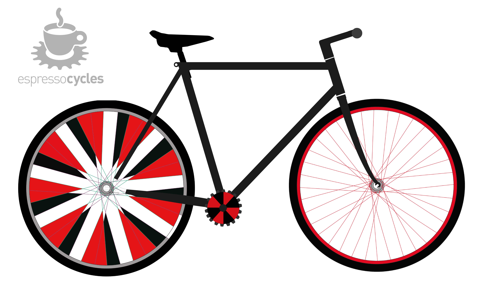
Boceto de final , defini este diseño por la ilusion optica que se genera en la rueda tracera, además
de los materiales que son reflejantes para darle al usuario más seguridad durante su uso
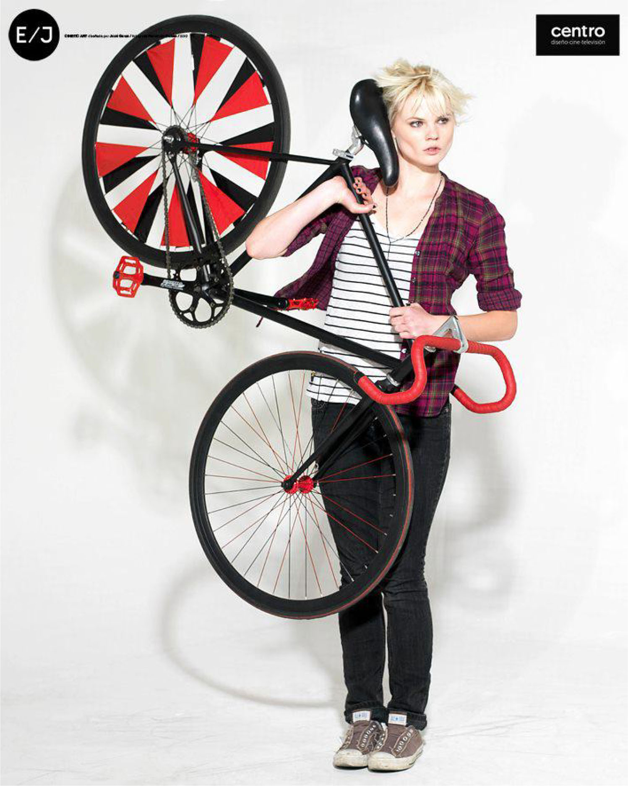
Bicicleta final
Juego de té
Diseñe un juego de té con el objetivo de mimetizar el minimalismo nórdico con la tradición de tomar té de las culturas orientales, para su producción en ceramica.
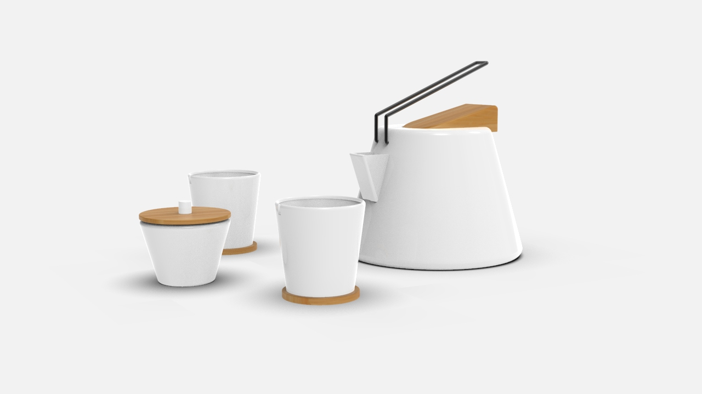
Juego de té
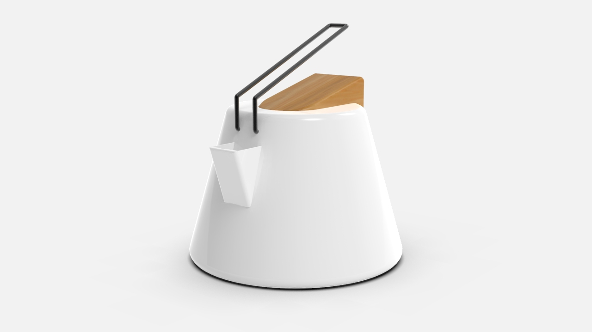
Tetera
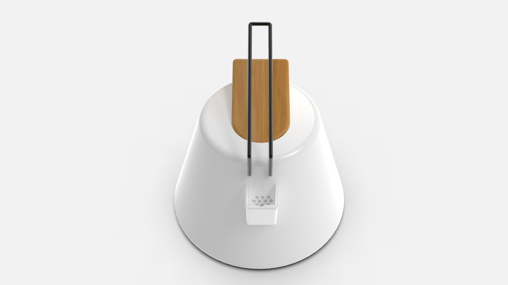
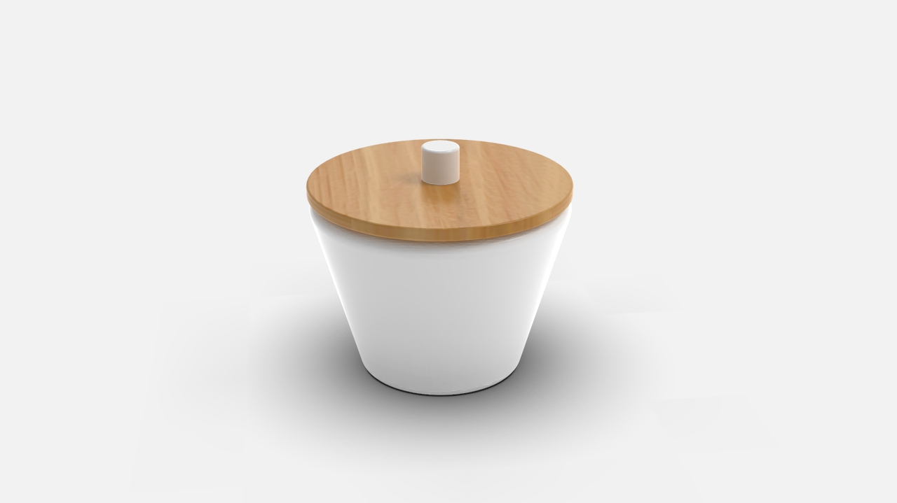
Azucarera
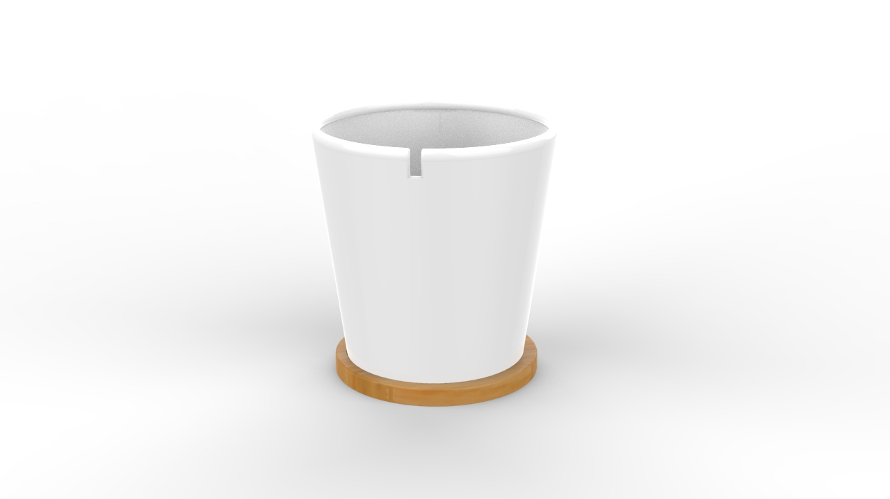
Taza
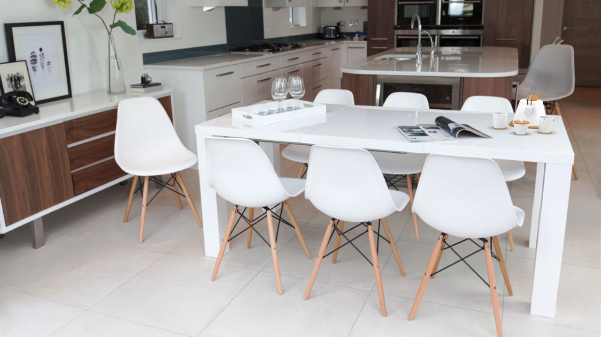
Juego de té en uso